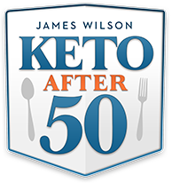

Keto After 50 - High Converting Keto Offer
Product profile · Marketplace data 2026-10-09 · Sales-page research 2026-10-09 · Categories: Health & Fitness

Marketplace record
| Product type | Book (printed) |
|---|---|
| Price | $10.07 (Single payment) |
| Affiliate commission | 75% |
| Refund window | Per the vendor's sales page — check the official page before buying |
| Vendor | raposo1 (listed since 2019-10-29) |
| Marketplace stats* | Cart conversion — · cancel rate — · affiliate earnings/sale $7.55 |
* Vendor-side marketplace statistics reported by Digistore24; they depend on traffic quality and are not a forecast.
Vendor's marketplace description
- INSANELY High AOV's - HIGH Converting Keto Offer - JAW DROPPING EPC's Simply put, Keto After 50 is the #1 choice for Keto Recipe traffic or even health traffic.
From the vendor's sales page
Page title: Keto After 50
Headline
A Solution That Works for Us Men and Women Who Are Over 50…
And Still Be Able to Eat as Much as We Want, Every Single Day!
Introducing a New Approach To The Ketogenic Diet For Men And Women Over The Age of 50
Section headlines
- Yes, that’s right!
Opening copy
All without portion control, counting calories, or starvation diets where you’re one decision away from throwing it all out.
Unlike most programs out there, it’s been shown to work on people from all over the world, with all types of backgrounds and health issues, including:
Post pregnancy Obesity Being Older Than 50 when the metabolism is supposedly too slow to burn off any extra calories
Research method: raw HTML fetch · 2324 words on page · quality: rich · researched 2026-10-09. Full research file (MD) ↗
Where to check it out
Read the vendor's full sales page (current price, guarantee terms and bonuses are listed there):
View official sales page
That link is an affiliate link — if you buy through it we earn a commission from the vendor at no extra cost to you.